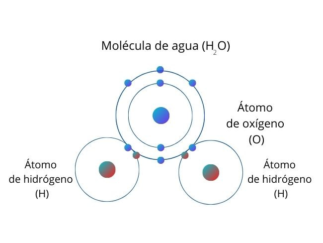
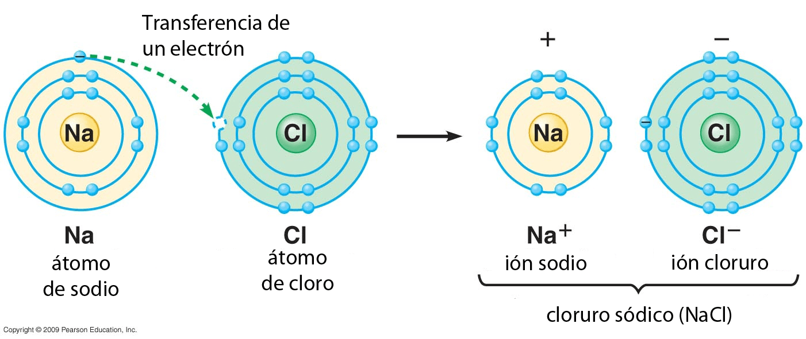

UNION IONICA Y COVALENTE

Un compuesto químico es una sustancia formada por la combinación química de dos o más elementos de la tabla periódica. Los compuestos son representados por una fórmula química. Por ejemplo, el agua (H2O) está constituida por dos átomos de hidrógeno y uno de oxígeno.

Los compuestos iónicos son compuestos neutros formados por iones cargados positivamente llamados cationes e iones cargados negativamente llamados aniones.